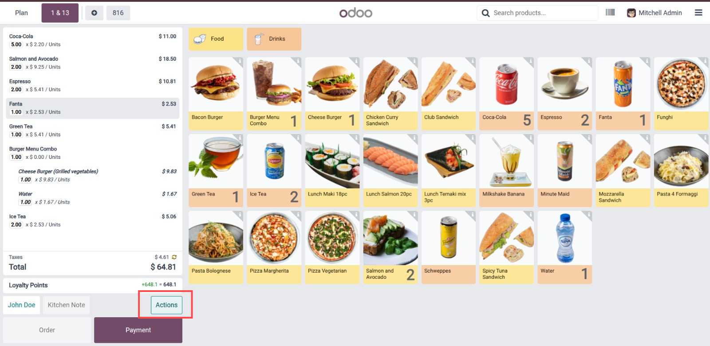
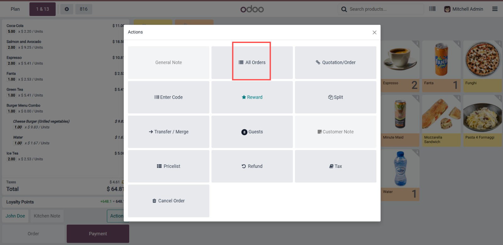
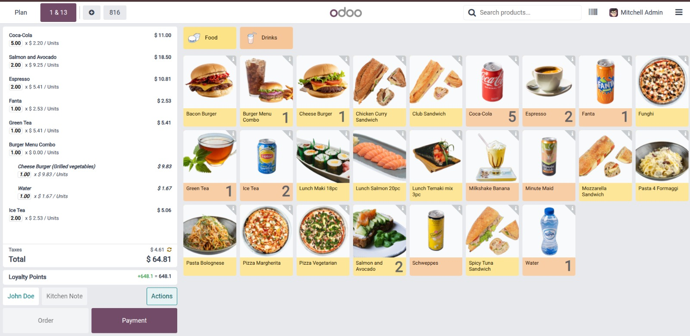
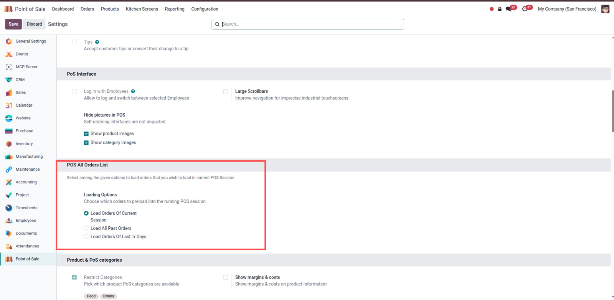
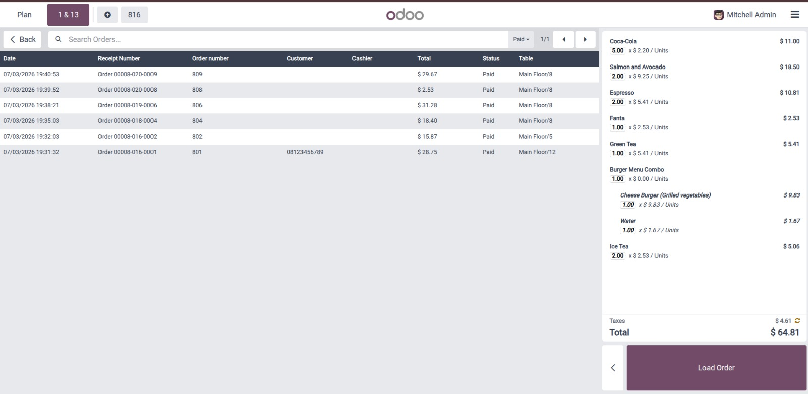
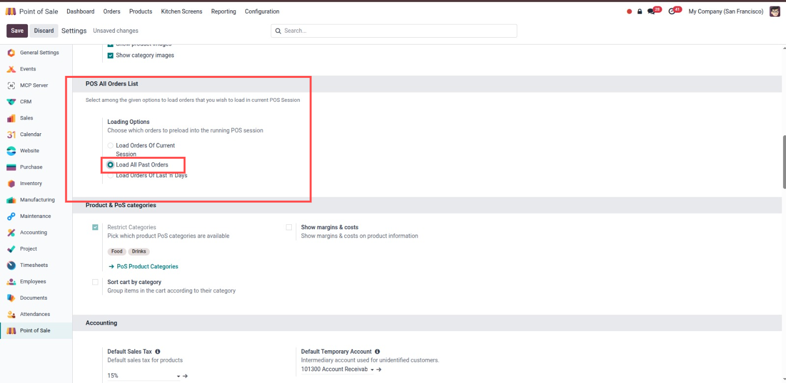
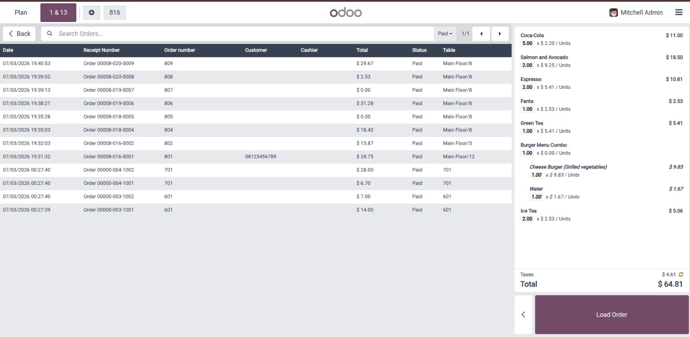
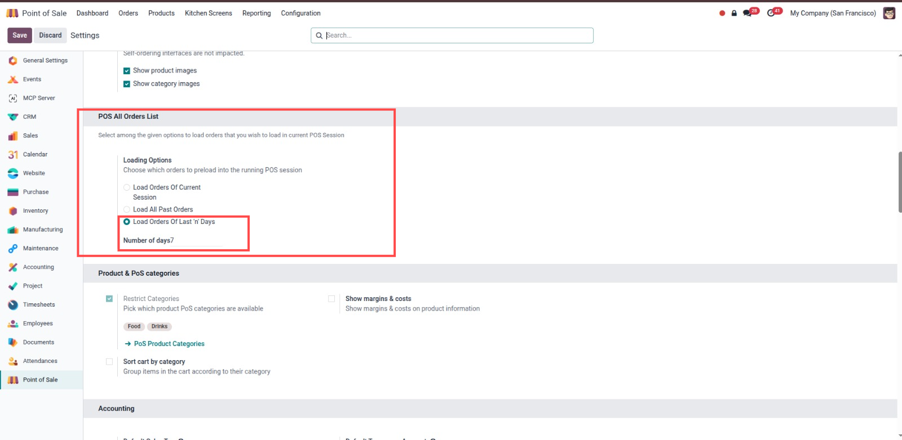
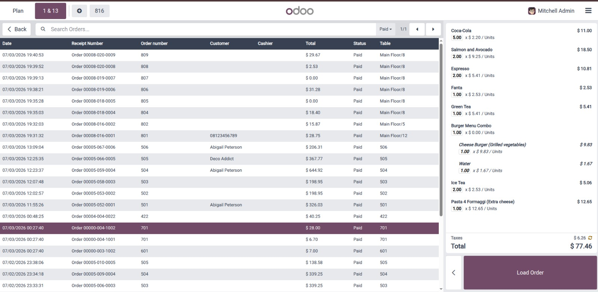
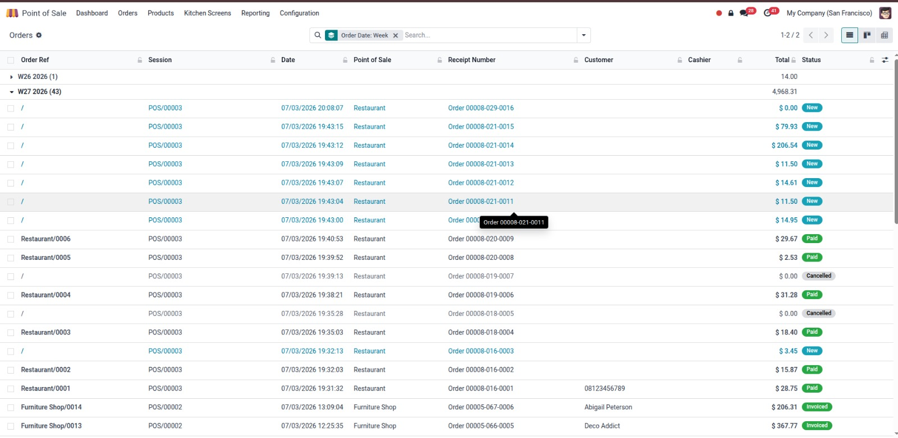

Configure POS to load orders of the current session, load all past orders, or load orders of the last 'n' days.
Effortlessly search for any past order using the customer's name, date, or order/receipt reference number.
Click the "All Orders" button inside POS Actions menu to open Odoo's native Ticket Screen with pre-filtered synced orders.









